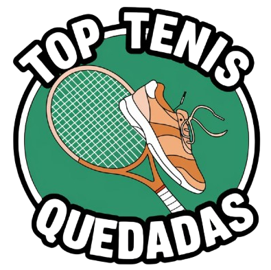

<header>
    <nav>
        <span>
            
            
        </span>
        <div *ngIf="(token$ | async) as token" id="profile-session">
            <p (click)="goProfile()" class="email-profile">{{emailToken}}</p>
            <p (click)="cleanToken()" class="email-profile">Cerrar Sesion</p>
        </div>
        <div *ngIf="!(token$ | async)">
            <p [routerLink]="'/auth/login'">Login</p>
        </div>
        <div class="menu-content" [ngClass]="{'active': showMenuBol}">
            <ul>
                @for (item of links; track $index) {
                    <li (click)="showMenu()" [routerLink]="item.url">{{item.title}}</li>
                }
            </ul>
        </div>
        <div class="content-links-btn">
            @if(stateWidth){
                <ul>
                    @for (item of links; track $index) {
                        <li [routerLink]="item.url">{{item.title}}</li>
                    }
                </ul>
            }@else {
                <div>
                    <div>
                        <svg (click)="showMenu()" class="w-6 h-6 text-gray-800 dark:text-white" aria-hidden="true" xmlns="http://www.w3.org/2000/svg"  fill="currentColor" viewBox="0 0 24 24">
                        <path stroke="currentColor" stroke-linecap="round" stroke-width="2" d="M5 7h14M5 12h14M5 17h14"/>
                        </svg>
                    </div>
                </div>
            }
            
            
            <div class="content-btn">
                @if (state) {
                    <button  (click)="setUserTheme('dark'); changeState()">
                        <svg class="w-6 h-6 text-gray-800 dark:text-white" aria-hidden="true" xmlns="http://www.w3.org/2000/svg" width="24" height="24" fill="currentColor" viewBox="0 0 24 24">
                            <path fill-rule="evenodd" d="M11.675 2.015a.998.998 0 0 0-.403.011C6.09 2.4 2 6.722 2 12c0 5.523 4.477 10 10 10 4.356 0 8.058-2.784 9.43-6.667a1 1 0 0 0-1.02-1.33c-.08.006-.105.005-.127.005h-.001l-.028-.002A5.227 5.227 0 0 0 20 14a8 8 0 0 1-8-8c0-.952.121-1.752.404-2.558a.996.996 0 0 0 .096-.428V3a1 1 0 0 0-.825-.985Z" clip-rule="evenodd"/>
                          </svg>
                    </button>
                }@else {
                    <button  (click)="setUserTheme('light'); changeState()">
                        <svg class="w-6 h-6 text-gray-800 dark:text-white" aria-hidden="true" xmlns="http://www.w3.org/2000/svg" width="24" height="24" fill="none" viewBox="0 0 24 24">
                            <path stroke="currentColor" stroke-linecap="round" stroke-linejoin="round" stroke-width="2" d="M12 5V3m0 18v-2M7.05 7.05 5.636 5.636m12.728 12.728L16.95 16.95M5 12H3m18 0h-2M7.05 16.95l-1.414 1.414M18.364 5.636 16.95 7.05M16 12a4 4 0 1 1-8 0 4 4 0 0 1 8 0Z"/>
                          </svg>                  
                    </button>
                }
            </div>
        </div>
        
    </nav>
</header>

